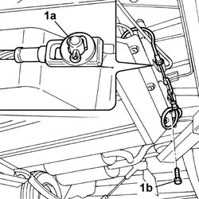
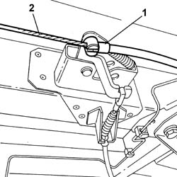

3380A31 HANDBRAKE CABLE INTERMEDIATE SECTION - R.R.
- Path
- Procedures > 33 BRAKING SYSTEM > 3380 HANDBRAKE > 3380A HANDBRAKE CONTROL AND LINKAGE > 3380A31 HANDBRAKE CABLE INTERMEDIATE SECTION - R.R.
- Kind
- repair procedure (removal / refitting; the operation number is the code)
- Applies to
- engines: 2.0 16V; all production periods; only with equipment: BIPOWER
- Interactive page
- https://sloeber94.github.io/elrnDB-fDct/en/#/244001149
Applies to: engines: 2.0 16V; all production periods; only with equipment: BIPOWER
 Removing
Removing
 Refitting
Refitting- Position the vehicle on the lift.
1. Undo the bolt fixing the canister shield and handbrake mounting bracket (1a) and remove the split pin (1b).

Applies to: engines: 2.0 16V; all production periods; only with equipment: BIPOWER
1. Disconnect the intermediate handbrake cable from the rear idler.
Applies to: engines: 2.0 16V; all production periods; only with equipment: BIPOWER
1. Disconnect the intermediate handbrake cable from the front idler.
2. Remove the intermediate section of the handbrake cable.

Applies to: engines: 2.0 16V; all production periods; only with equipment: BIPOWER
Refitting
Removing- Fit the intermediate section of the handbrake cable and connect it to the front idler.
- Connect the intermediate handbrake cable to the rear idler.
- Join the two sections of the intermediate handbrake cable with the front section, securing them using the split pin.
- Tighten the bolt fixing the canister shield and cable support.
- Proceed with the adjustment of the handbrake cable.
Op. 3380A04 HANDBRAKE - CHECK TRAVEL
- Remove the vehicle from the lift.